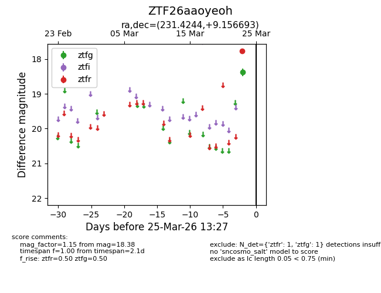
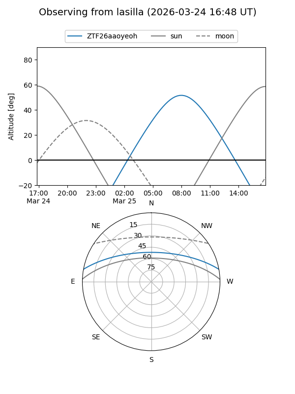
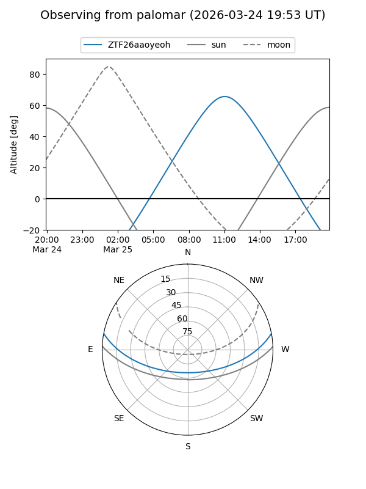

ZTF26aaoyeoh
Target ZTF26aaoyeoh at 2026-03-25 13:29
Aliases and brokers:
FINK: link
Lasair: link
ALeRCE: link
alt names
ZTF26aaoyeoh (ztf,fink_ztf)
Coordinates:
equatorial (ra, dec) = 231.4244,+9.15669
equatorial (HMS+DMS) = 15:25:41.86,+09:09:24.10
galactic (l, b) = (14.0615,+49.42706)
Flags:
Photometry:
last ztfg=18.38, ztfr=17.76
1 ztfg, 1 ztfr detections
Lightcurve

Visibility


Additional plots